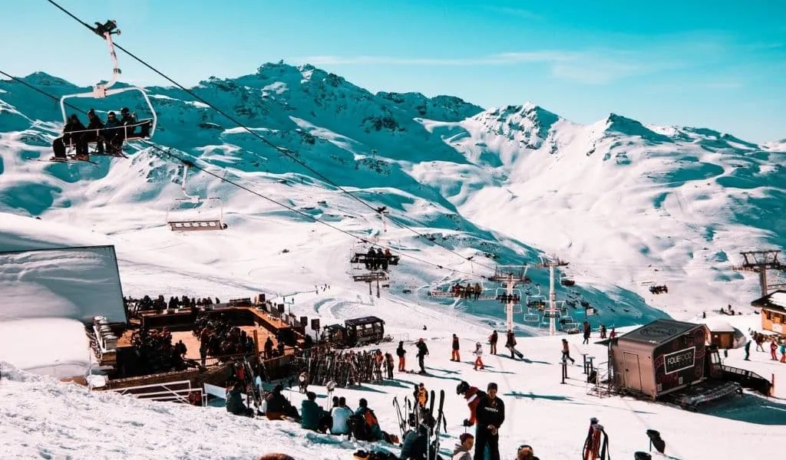
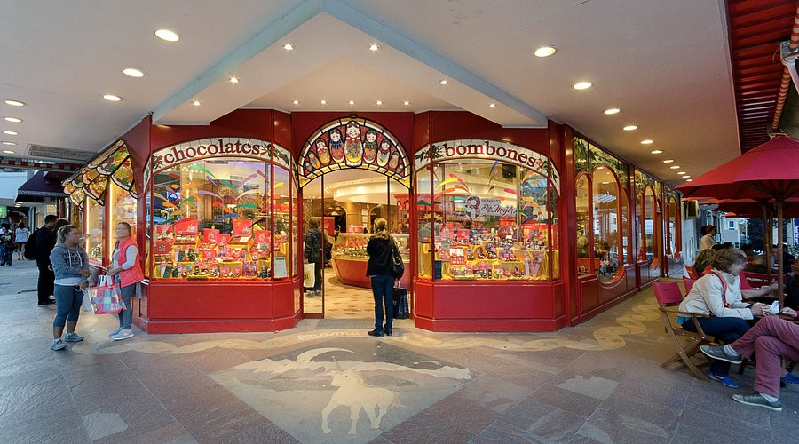
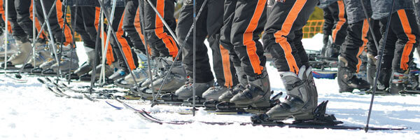

TIPS PARA BARILOCHE: ORGANIZÁ TU VIAJE MÁS ESPERADO
El viaje de egresados a Bariloche es una de las experiencias más esperadas de la secundaria.
Durante 8 días compartís excursiones, noches temáticas, paisajes increíbles y momentos únicos con tus amigos y también, compañeros de tu promo que capaz nunca tuviste la oportunidad de conocerlos tal como son.
No es solamente un viaje: son aquellos recuerdos que quedan para siempre.

CONSEJOS PARA ORGANIZARTE MEJOR EN BARILOCHE
- Cada Outfit esté separado en bolsas individuales para tener todo ordenado
- Coordinar con tus amigas, quién lleva cada cosa
- Establecer tiempos en la habitación para organizarse con el baño y el cambiarse/l
- Vayan a todas las excursiones y los boliches
- Organizarte con tus amigas o amigos con el tema de los tiempos, tanto la ducha, como las comidas y el tiempo sobrante después de las excursiones.
- Éstas cuestiones son fundamentales, ya que si te organizas mal no vas a poder disfrutar lo de la mejor forma. Para estar bien organizadas/os lo que se puede hacer, es previamente charlar con tus compañeros y tener en cuenta los tiempos de cada uno, después de eso llegará a un acuerdo de cómo se organizaría cada uno y ponerlo a prueba el primer día.
Lugares en donde pueden llegar a merendar muy rico
el primero se llama Terraza que está ubicado en pleno centro y tiene una vistas hermosas

Y el segundo es mamushka que también tien postres muy ricos que puedes disfrutar con amigas/os

¿CUÁLES VAN A SER TUS INDISPENSABLES?
- Guantes térmicos (que son OBLIGATORIOS)
- Manteca cacao, no importa si sos hombre o mujer, EL FRÍO TE ROMPE LOS LABIOS
- Botella de agua o vaso térmico (nunca viene mal)
- Protector solar, mejor si es uno facial
- Zapatillas QUE PUEDAS ARRUINAR
- Lentes de sol, la nieve refleja el sol y pega mucho el los ojos
- En nuetra opinión a pesar que te dicen que hay enfermería y ellos te dan todo, te conviene llevar los medicamentos que vos conoces que te mejoran y ayudan.
Además, pensá que no solo va una promo, son muchísimos chicos con lo mismo y seguro los médicos están a full, capaz ya sabés que es un dolor de cabeza que conocés y que con un ibuprofeno que llevas en la mochi ya te soluciona el malestar.
NOCHES TEMÁTICAS
Después de las excursiones llega el momento de prepararse para los boliches.
Cada noche tiene una temática distinta y van a ser una más linda que otra, cada noche mejor que la otra sacándose fotos
y compartiendo con la promo.
- Disfraces
- Bizarra
- Argentina
- Estudiantil
- Flúo
- Rojo y Blanco
- Total White
- Noche de Velas
LAS EXCURSIONES QUE TIENE TRAVEL ROCK
Nosotras vamos con travel, pero creemos que suelen ser muy parecidas a pesar de cambiar la companía...
- Circuito Chico, Punto Panorámico y Cerro López
- Cerro Catedral y visita a la Gruta Virgen de las Nieves
- Día completo de Ski
- Piedras Blancas
- Refugio de Montaña Rock
- Hard Trekking en Colonia Suiza
- Rafting en el Río Limay
- Cabalgatas en la montaña
- Safari 4x4
- Aventura en Four Trax o Speed Mountain (Chall-Huaco)
- Paintball
- Cross Road
- Circuito Regional y City Tour Magic Search
- Búsqueda del Tesoro de los Piratas
- Travel Rock Sports Games con premios
- Aventura nocturna en la montaña
- Expedición Patagónica Travel Rock

Tips para disfrutar al máximo tu viaje a Bariloche
- Priorizá la comodidad en tus outfits. Además de verse lindos, tienen que hacerte sentir cómoda durante toda la noche.
- Elegí un estilo que te represente. Podés inspirarte en outfits de años anteriores y adaptarlos a tu gusto, o buscar algo totalmente diferente. Lo importante es que refleje tu personalidad.
- No te vistas por presión social. Si un look no te gusta o te hace sentir incómoda, es probable que no disfrutes igual la noche. La prioridad es pasarla bien.
- Administrá bien los tiempos. Después de las excursiones el tiempo pasa muy rápido. Organizate para bañarte, prepararte y aprovechar también para recorrer el centro.
- Aprovechá cada momento libre. En lugar de quedarte en el hotel, salí a conocer la ciudad, merendar con amigos, recorrer los alrededores o disfrutar de los paisajes.
- Evitá usar uñas largas o muy delicadas. En muchas excursiones vas a necesitar usar las manos, ponerte guantes o hacer fuerza, por lo que es fácil que se rompan y termines lastimándote.
- Organizá la valija desde el primer día. Separá cada outfit en bolsas individuales para encontrar todo más rápido y mantener el orden.
- Llevá un control de tu ropa. Hacé una lista de las prendas que llevás y marcá cuáles ya usaste o lavaste para no perder nada al momento de volver.
- No faltes a ninguna excursión. Aunque estés cansada, son experiencias únicas que compartís con tu curso y probablemente no vuelvan a repetirse.
- Descansá durante los traslados. Aprovechá los viajes en colectivo para dormir un rato y recuperar energías antes de cada actividad.
- Viví el viaje al máximo. Disfrutá tanto de las excursiones como de las noches, compartí tiempo con tus amigos y aprovechá cada experiencia, porque son recuerdos que van a quedar para siempre.
Contactános y te ayudamos
También seguinos en la cuenta de la promo para ver todo lo de nuestro viaje a bariloche!!!